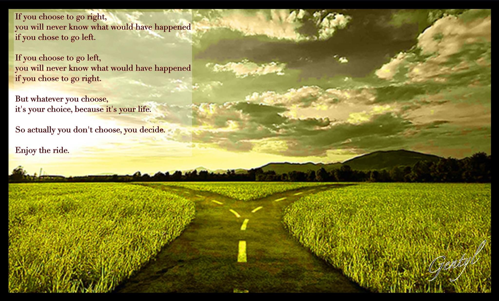
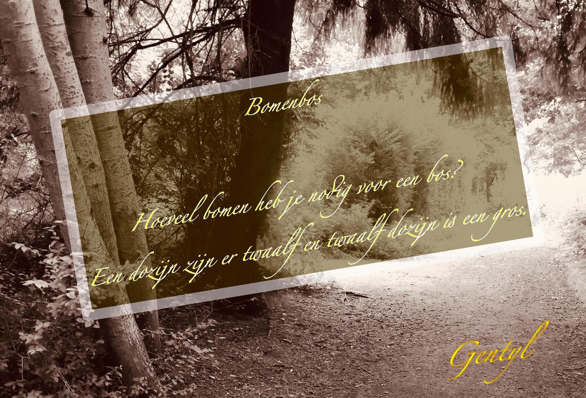

Welkom in mijn Wereld
Een reis door woorden, beelden en gedachten.
Van filosofische reflecties tot absurdistische humor,
van conceptuele kunst tot existentiële poëzie.
"De kunst is om het leven niet serieus te nemen
terwijl je het leven niet serieus neemt!"
Video's
Klik op play om te bekijken
Gedichten & Teksten
Klik op een gedicht om het volledig te lezen
Visuele Kunst
Een selectie van visuele creaties

Enjoy the ride

ZELF PORTRET

bomenbos

KOM/MOK-Spiegelgedicht

Waarom is mens zijn zo lastig?

Ceci n'est pas un dauphin
Vanaf morgen
stel ik alles uit!
⏳
Uitstelgedrag
Moeder Aarde
in transitie naar
Aardkloot
Moeder Aarde

Second Amendment
Tunnelvisie
Ik heb een gedicht geschreven
wat iedereen moet gelezen hebben...
De tunnel was open maar gesloten...
pizza? 🍕
Tunnelvisie
Wimpie Wijsman - Humor

Wimpie Wijsman - Humor

Wimpie Wijsman - Humor

Wimpie Wiseman (EN) - Humor

Wimpie Wiseman (EN) - Humor